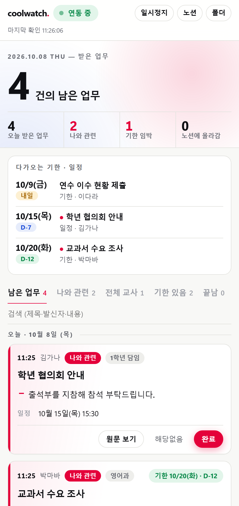

쿨메신저 보조도구
쿨메신저로 받은 업무 메시지에서 할 일·기한·일정을 뽑아, 화면 오른쪽의 작은 창에 카드로 보여 주는 학교 PC용 도구입니다. 첨부 파일은 카드에서 눌러 바로 엽니다. 팝업이나 소리는 없습니다.

받기 전에 읽어 주세요
- 쿨메신저의 기록 파일은 읽기만 합니다. 다만 첨부 자동 저장(처음부터 켜져 있음)은 쿨메신저 메시지 창의 ‘모든파일 저장’ 단추를 대신 누르며, 그 글이 읽음으로 바뀝니다. 원하지 않으면 설정의 “받는 사람”에서 끕니다.
- 정리 방식을 설치 때 고릅니다. Claude로 정리하면 메시지 본문이 Anthropic(Claude)으로 전송됩니다. 이 PC의 AI로 정리하면 본문이 PC 밖으로 나가지 않습니다. 함께 쓰기는 이 PC의 AI가 먼저 읽어 민감한 글은 PC 안에서만 정리하고, 나머지만 Claude로 보냅니다. 아래 정리 방식 고르기를 먼저 읽어 주세요.
- 학생·학부모 내용이 든 글은 제외 단어(기본: 상담, 학부모, 생활기록, 성적, 결석)로 걸러 기록하지 않습니다. 학교 사정에 맞게 단어를 더 넣어 주세요.
- 한 대의 PC, 한 가지 쿨메신저 버전에서 만들어 쓰던 도구입니다. 다른 PC에서 이상하면 알려 주세요.
정리 방식 고르기
날짜·기한과 '나와 관련' 여부는 세 방식 모두 PC 안의 규칙이 정합니다. 다른 것은 짧은 제목, 요지, 할 일 문장을 누가 쓰느냐와 글이 PC 밖으로 나가느냐입니다.
| A. Claude로 정리 | B. 이 PC의 AI로 정리 | C. 함께 쓰기 | |
| 설치 파일 | 설치-Claude.bat | 설치-이PC의AI.bat | 설치-함께쓰기.bat |
| 메시지 본문 | Anthropic(Claude)으로 전송됩니다 | PC 밖으로 나가지 않습니다 | 이 PC의 AI가 먼저 읽고, 민감하지 않은 글만 Claude로 보냅니다. 애매하면 보내지 않습니다 |
| 필요한 것 | Claude Pro·Max 구독 계정 | 메모리 16GB 권장(8GB 이상), 디스크 빈 곳 10GB. 첫 설치 때 Ollama 약 1.6GB와 모델 약 3.3GB를 받습니다 | A와 B 둘 다 |
| 속도 | 한 건에 5초쯤 | 카드는 바로 뜨고, 문장은 15초쯤 뒤 다듬어집니다. 여러 건이 한꺼번에 오면 차례로 | 카드는 바로 뜨고, 판단 몇 초 + 정리. 민감한 글은 B처럼 15초쯤 |
| 정리 품질 | 가장 좋습니다. 낯선 글도 잘 읽습니다 | 지어낸 업무 글 12건 시험에서는 요지·할 일이 Claude만큼 정확했습니다. 실제 글에서는 할 일 문장이 가끔 어색합니다 | 대부분의 공지·업무 글은 A, 민감한 글은 B 수준 |
| 비용 | 구독 사용량을 조금 씁니다(가벼운 모델, 하루 200건까지) | 무료. 대신 정리하는 동안 CPU를 씁니다(코어 하나는 남겨 둠) | A보다 적게, B보다 CPU를 덜 씁니다(판단은 짧음) |
| 안 될 때 | 인터넷이 끊기거나 한도에 걸리면 규칙으로 먼저 정리하고, 나중에 Claude로 다시 정리합니다 | Ollama가 꺼져 있으면 규칙으로 먼저 정리하고, 켜지면 다시 정리합니다 | Claude가 안 되면 이 PC의 AI가 정리합니다. 이 PC의 AI가 꺼져 있으면 거를 수 없으므로 Claude로도 보내지 않고 규칙으로 정리합니다 |
| 이런 분께 | Claude 구독이 있고, 빠르고 정확한 쪽이 좋은 분 | 구독이 없거나, 학생·학부모 이야기가 섞일 수 있는 글을 밖으로 보내고 싶지 않은 분 | 구독이 있고 PC 사양도 되며, 정확함과 개인정보 보호를 함께 원하는 분 |
나중에 바꿀 수 있습니다. 화면 설정의 정리 방식에서 고르거나, 다른 설치 파일을 다시 실행합니다(설정과 기록은 그대로). 둘 다 쓰지 않아도 PC 안의 규칙만으로 동작합니다. 이때 할 일은 원문 문장을 그대로 옮깁니다.
설치
관리자 권한이 필요 없고, PC에 파이썬이 없어도 됩니다.
- 압축 파일을 받아 풉니다.
- 위에서 고른 방식의 설치 파일을 더블클릭합니다. "Windows의 PC 보호" 창이 뜨면 추가 정보 → 실행을 누릅니다.
- 화면 오른쪽에 창이 열리면 맨 위의 처음 설정을 순서대로 확인하고 설정 마치기를 누릅니다.
| A. 설치-Claude.bat | B. 설치-이PC의AI.bat | C. 설치-함께쓰기.bat | |
| 걸리는 시간 | 1~3분 | 10~30분(모델 받기). 다시 설치할 때는 1~3분 | B와 같음 |
| 설치 파일이 하는 일 | 보조도구 설치 → Claude 프로그램이 없으면 함께 설치 → 정리 방식을 Claude로 | 메모리·디스크 확인 → 보조도구 설치 → Ollama가 없으면 설치 → 모델(qwen3.5:4b) 받기 → 정리 방식을 이 PC의 AI로 | B의 일 + Claude 프로그램 설치 → 정리 방식을 함께 쓰기로 |
| 설치 뒤 할 일 | 처음 설정에서 Claude 로그인(브라우저가 열림) | 없음. 처음 설정에 "정리 방식: 이 PC의 AI"가 체크되어 있으면 됩니다 | 처음 설정에서 Claude 로그인. "이 PC의 AI"도 체크되어 있는지 확인 |
다음부터는 로그온하면 자동으로 켜집니다. 바탕화면의 쿨메신저 보조도구 아이콘으로도 켭니다.
처음 설정에서 하는 일
| 쿨메신저 찾기 | 자동입니다. 못 찾으면 쿨메신저에 한 번 로그인하세요. |
|---|---|
| 제외 단어 | 기본 단어를 확인하고 필요한 단어를 더 넣습니다. |
| 내 역할 | 예: 1학년 담임, 영어과. 이 역할에게 온 글이 '나와 관련'으로 표시됩니다. |
| 정리 방식 | A: Claude가 없으면 Claude 설치, 다음에 로그인을 누릅니다(Pro·Max 구독 계정). B: "이 PC의 AI"가 체크되어 있으면 할 일이 없습니다. C: 둘 다 합니다. |
| 노션 연결 (선택) | 아래 '노션 연결'을 따라 합니다. 하지 않아도 화면만으로 쓸 수 있습니다. |
쓰는 법
| 아이콘 | 작업표시줄 오른쪽 아래의 동그란 아이콘입니다. 초록 = 연동 중, 회색 = 일시정지, 빨강 = 오류. 주황 점이 붙으면 아직 안 본 새 글이 있습니다. |
|---|---|
| 창 열기 | 아이콘을 누르면 화면 오른쪽에 작은 창이 열립니다. |
| 완료 · 해당없음 | 다 한 일은 완료, 나와 상관없는 글은 해당없음을 누르면 목록에서 빠집니다. 끝남 탭에서 되돌릴 수 있습니다. |
| 업무 적기 | 창 위쪽 칸에 내 업무를 그냥 적고 정리해서 올리기(또는 Ctrl+Enter)를 누릅니다. 예: “금요일까지 1학년 수행평가 채점, 3반 결시생 따로”. 잠시 뒤 제목·할 일·기한으로 정리된 카드가 맨 위에 뜨고, 노션을 연결했으면 노션에도 올라갑니다. 보낸 사람은 “나 (직접 입력)”으로 적힙니다. 쓰는 정리 방식은 지금 고른 방식과 같고, 학번 같은 번호는 가려서 보냅니다. 함께 쓰기에서는 학생 이름이 든 글처럼 민감한 내용이면 Claude로 보내지 않습니다. |
| 원문 보기 | 카드 안에서 원문이 펼쳐집니다. 전화번호는 가려서 보여 줍니다. |
| 첨부 파일 | 카드의 파일 이름을 누르면 열립니다. 첨부는 글이 올 때 미리 받아 두므로(첨부 자동 저장), 쿨메신저가 꺼진 자리에서도 열립니다. 이름 옆에 “저장 전”이 붙은 파일은 누르면 받아서 엽니다. |
| 기한 · 일정 | “다가오는 기한 · 일정”의 줄을 누르면 그 업무 카드로 갑니다. |
| 자리를 비울 때 | 쿨메신저가 꺼져 있는 동안은 대기 중으로 바뀌고, 돌아오면 밀린 글을 이어서 정리합니다. |
| 누가 정리했나 | 카드 맨 아래에 #번호 · Claude 정리, 이 PC의 AI 정리, 규칙(…) 정리 가운데 하나가 적힙니다. 함께 쓰기에서 민감하다고 본 글은 위에 민감 · PC 안에서만 표시가 붙고, 노션에는 원문 없이 정리한 내용만 올라갑니다. |
| 새 버전 | 프로그램 파일이 바뀌면 창 위에 새 버전이 들어왔습니다 띠가 뜹니다. 다시 켜기를 누르면 적용됩니다. |
| 화면 색 | 설정의 화면 색에서 강조색과 밝기를 고릅니다. |
A. Claude로 정리
- 기본값은 Haiku + 노력 낮음입니다. 짧은 업무 글 정리에는 충분하고, Pro 요금제라면 그대로 두는 것을 권합니다.
- 설정의 정리 방식에서 모델과 노력 정도를 바꿀 수 있고, 오늘 쓴 건수와 토큰이 보입니다.
- 하루 200건을 넘거나 사용 한도에 걸리면 PC 안의 규칙으로 정리했다가, 나중에 Claude로 다시 정리합니다.
- 30자보다 짧은 글은 Claude를 부르지 않습니다.
B. 이 PC의 AI로 정리
- Ollama(PC 안에서 AI 모델을 돌리는 무료 프로그램)와 qwen3.5:4b 모델을 씁니다. 그래픽카드가 없는 노트북에서 같은 크기 모델 넷을 견주어, 할 일을 가장 정확히 가려낸 모델입니다(2026년 10월).
- 새 글이 오면 규칙 결과로 카드가 바로 뜨고, 15초쯤 뒤 AI가 쓴 제목·요지·할 일로 바뀝니다. 노션에는 바뀐 결과가 올라갑니다.
- 보내는 사람이 하겠다는 일, 안 해도 된다고 한 일은 할 일에서 뺍니다. 일부 선생님에게만 하는 부탁은 "1학년 담임: …"처럼 대상을 붙입니다.
- 정리하는 동안 CPU를 많이 씁니다. 노트북이 멈추지 않게 코어 하나는 남겨 둡니다. 그래도 PC가 버벅이면 설정의 정리 방식을 규칙이나 Claude로 바꿉니다.
- Ollama는 로그온 때 저절로 켜집니다. 꺼져 있으면 설정에 "Ollama가 꺼져 있음"이 보이고, 그동안 온 글은 켜진 뒤 다시 정리합니다.
C. 함께 쓰기
- 새 글이 오면 이 PC의 AI가 “특정 학생·학부모·교직원 한 사람을 알아볼 수 있는 내용인가”를 짧게 판단합니다. 아니라고 확실히 답할 때만 Claude로 보냅니다. 답이 애매하면 민감한 글로 봅니다. ‘상담’, ‘성적’ 같은 낱말만으로는 거르지 않으므로 “학부모 상담 주간 안내” 같은 공지는 Claude가 정리합니다.
- 학번·반번호·주민번호·메일은 가려서 보냅니다. 예를 들어
10315,1학년 3반 15번은[학번1]로 바뀌어 Claude에 가고, Claude가 “[학번1] 서류 내기”로 정리하면 이 PC에서 “10315 서류 내기”로 되돌려 카드에 보여 줍니다. 전화번호는 처음부터 가립니다. 가리는 일은 AI가 아니라 정해진 모양을 찾는 규칙이 하므로 빠뜨리지 않습니다. - 이 PC의 AI가 꺼져 있거나 쉬는 중이면 거를 수 없으므로, 그동안 온 글은 Claude로 보내지 않고 규칙으로 정리했다가 AI가 켜지면 다시 정리합니다.
- 이 PC의 AI 판단이 100% 정확하지는 않습니다(아래 시험 결과). 꼭 PC 안에서만 다룰 말은 설정 파일의
sensitive_words에, 아예 기록하지 않을 말은 제외 단어에 넣습니다. - 시험 결과(2026년 10월, 지어낸 글): 학생 이름과 상담·건강·가정 사정·성적, 교직원 개인 사정 같은 민감한 글 12건을 이 PC의 AI가 모두 가려냈고, 공지·업무 요청 12건은 모두 Claude로 보냈습니다. 학번만 든 업무 글, ‘학부모 상담 주간’·‘성적 처리 일정’ 같은 공지는 일반으로, 가린 학번이어도 아이의 사정이 담긴 글은 민감으로 판단했습니다(6건 모두 맞음). 판단 한 번에 그래픽카드 없는 노트북에서 7~40초(배터리로 쓰거나 뜨거우면 느려짐)가 걸리고, 그동안 카드는 규칙 결과로 먼저 떠 있습니다.
노션 연결 (선택)
정리된 글을 내 노션 '받은 업무함'에도 올려 휴대폰에서 볼 수 있습니다. 화면에서 누른 완료·해당없음은 노션의 상태와 서로 맞춰집니다.
- 받은 업무함 템플릿을 열고 오른쪽 위 복제를 눌러 내 노션으로 가져갑니다.
- 노션 통합 페이지에서 새 통합(유형: 내부)을 만들고 시크릿을 복사합니다.
- 복제한 받은 업무함을 열고 오른쪽 위 ··· → 연결 → 방금 만든 통합을 추가합니다.
- 쿨메신저 보조도구 설정의 노션 연결에 받은 업무함 주소와 시크릿을 차례로 붙여 넣고 저장합니다. "연결되었습니다"가 나오면 끝입니다.
문제 해결
아이콘이 빨강이고 "오류 — 멈춤"이라고 나옵니다
쿨메신저 쪽에 낯선 오류가 생겨 안전하게 멈춘 것입니다. 쿨메신저가 정상인지 본 뒤 화면의 오류 확인 · 다시 시작을 누르세요.
첨부 파일이 “저장 전”에서 바뀌지 않습니다
쿨메신저는 첨부를 받자마자 PC에 저장하지 않습니다. 보조도구가 쿨메신저 메시지 창의 모든파일 저장 단추를 대신 눌러 받은 파일 폴더에 받아 둡니다. 그래서 쿨메신저의 메시지 관리함 창이 열려 있어야 합니다(다른 창 뒤에 있어도 됩니다). 창이 닫혀 있던 동안 온 글은 다음에 그 창을 열면 15초에 하나씩 채워집니다. 최근 글(목록 위에서 30번째까지)만 받습니다. 직접 받으려면 쿨메신저에서 저장을 누르면 됩니다.
첨부 자동 저장을 끄고 싶습니다
설정의 받는 사람에서 첨부 자동 저장을 끕니다. 켜 두면 첨부가 있는 글은 오자마자 읽음으로 바뀌고, 저장하는 순간 메시지 창이 그 글로 넘어갑니다. 꺼도 카드에서 “저장 전” 파일을 누르면 그때 받아서 엽니다. 마우스와 키보드는 움직이지 않으며, 화면의 첨부 이름이 받으려는 파일과 맞을 때만 누릅니다. 쿨메신저가 업데이트되어 화면 구성이 바뀌면 이 기능은 누르지 않고 멈춥니다.
창이 안 열립니다
바탕화면의 쿨메신저 보조도구 아이콘을 누르세요. 그래도 안 되면 처음에 고른 설치 파일을 다시 실행합니다.
설치 중에 멈춥니다
학교 보안 프로그램이 내려받기를 막았을 수 있습니다. 인터넷 연결을 확인하고 설치 파일을 다시 실행해 보세요. 계속 막히면 PC에 파이썬(python.org)을 먼저 설치한 뒤 다시 실행합니다. B·C 방식에서 모델 받기가 계속 실패하면 학교망이 막은 것일 수 있습니다. 다른 인터넷(휴대폰 테더링 등)에서 다시 실행하거나 A 방식을 쓰세요.
"self signed certificate" 오류가 납니다
학교망이 보안 점검용 인증서를 끼워 넣어 생기는 오류입니다. 다른 인터넷에서 설치하거나, 학교 전산 담당께 문의하세요.
카드 아래에 "규칙(…) 정리"라고 적혀 있습니다
인터넷이 끊겼거나(오프라인), Claude 한도에 걸렸거나, 이 PC의 AI가 아직 깨어나지 않았을 때(로컬 쉬는 중) 온 글이라 PC 안의 규칙으로 먼저 정리한 것입니다. 다시 되면 저절로 다시 정리합니다. "규칙(짧은 글)"은 짧아서 AI를 부르지 않은 글입니다.
정리가 오래 걸리고 PC가 느려집니다 (B·C 방식)
이 PC의 AI는 그래픽카드 없이 CPU로만 돌아서 한 건에 15초쯤 걸리고, 그동안 CPU를 많이 씁니다. 한꺼번에 많은 글을 다시 정리하면 몇 분 동안 느려질 수 있습니다. 노트북이 뜨거워지면 전원을 연결하고 통풍이 되게 두세요. 계속 버거우면 정리 방식을 바꿉니다.
정리 방식을 바꾸고 싶습니다
설정의 정리 방식에서 고릅니다. 이 PC의 AI나 함께 쓰기를 처음 쓰는 PC라면
설치-이PC의AI.bat이나 설치-함께쓰기.bat을 실행해야 Ollama와 모델이 준비됩니다. 이미 있는 카드는 설정의 지난 메시지 불러오기에서 "이미 있는 카드도 다시 정리"를 켜고 누르면 새 방식으로 바뀝니다.업데이트
새 압축 파일을 받아 처음에 고른 설치 파일을 다시 실행합니다. 설정과 기록은 그대로 남습니다.
제거
압축 폴더의
제거.bat을 실행합니다. 프로그램을 끄고 바로가기와 자동 실행을 지웁니다. 정리된 기록은 남겨 둡니다. Ollama와 Claude 프로그램은 다른 데서도 쓸 수 있어 남겨 두므로, 지우려면 Windows 설정 → 앱에서 지웁니다.고쳐 쓰고 싶은 분께
압축 파일 안에 소스가 모두 들어 있습니다. 폴더를 Claude Code로 열고 아래 문서부터 읽게 하세요.
HANDOFF.md | 지금까지 확인한 사실, 구조, 결정의 까닭, 남은 일 |
|---|---|
CLAUDE.md | 실제 메시지를 다룰 때의 안전 규칙 (Claude Code가 자동으로 읽음) |
| 시험 | python test_fake.py — 가짜 쿨메신저 DB로 전체 흐름을 시험합니다. |